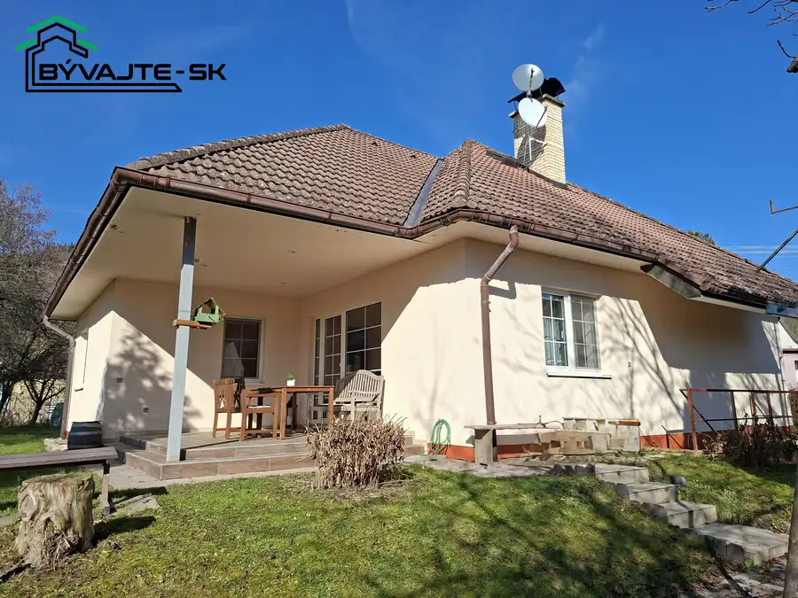
Aktuálna ponuka
16 nehnuteľností, predovšetkým byty, rodinné domy, pozemky. Každá má vlastnú stránku s fotkami, popisom a mapou.
Prezrieť ponukuDana KrškováRealitná maklérka
Realitná maklérka · BÝVAJTE - SK s.r.o.
Predaj a prenájom nehnuteľností · Prievidza, Tužina, Kanianka
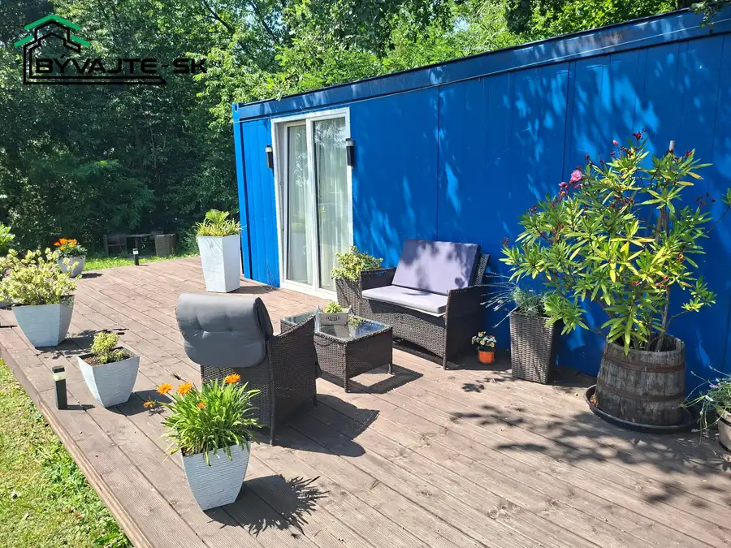
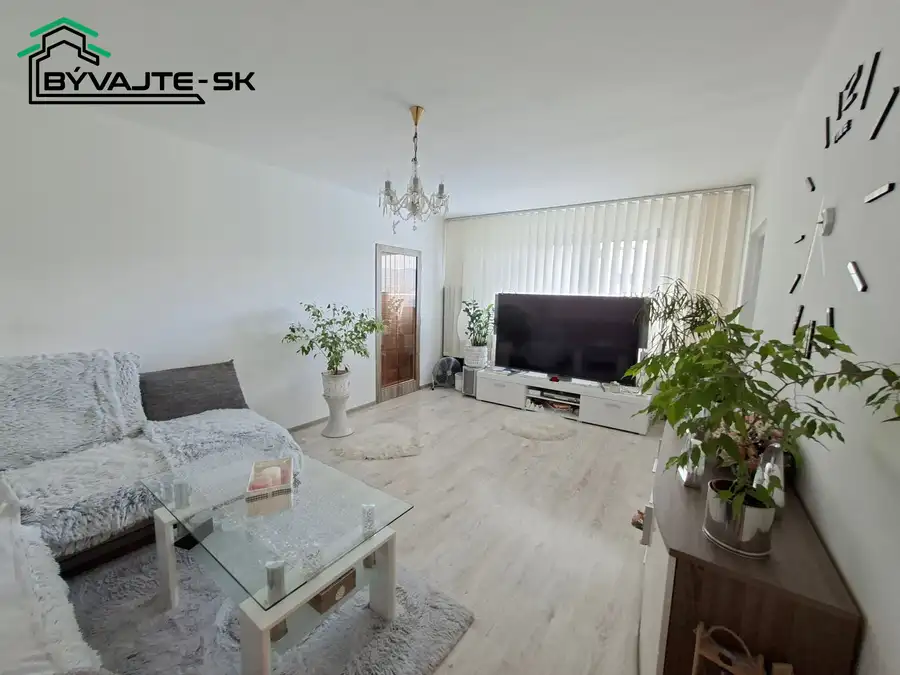
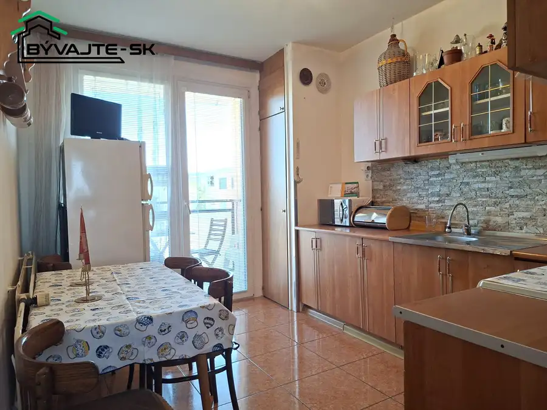
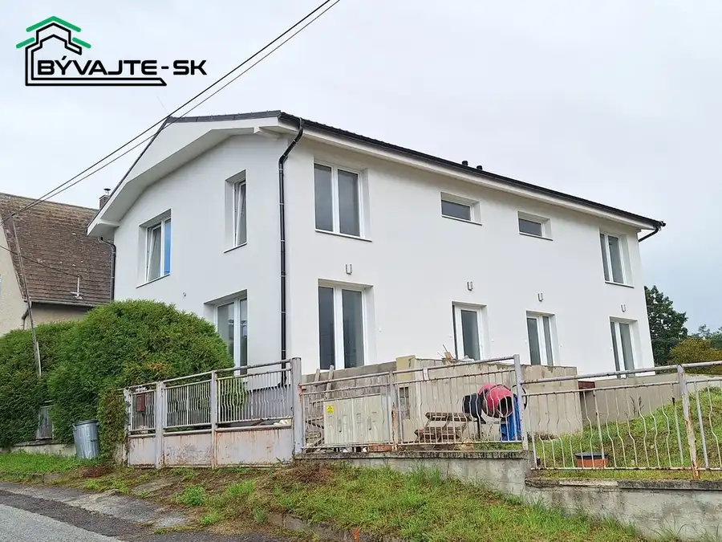
Dom8 185 000 €Novostavba rodinného domu v obci Pravenec pri Prievidzi. Pravenec NOVINKA!RK BÝVAJTE - SK vám ponúka novostavbu rodinného domu v obci Pravenec pri Prievidzi. Rodinný dom je rozdelený na dve identické bytové…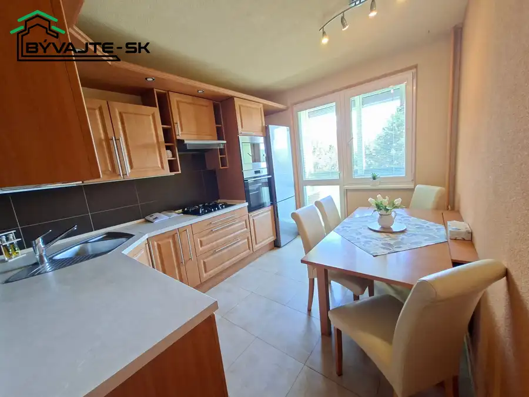
Byt10 147 000 €Kompletne zrekonštruovaný trojizbový byt s loggiou v Prievidzí, sídlisko Zapotôčky. Prievidza 3-izbový72 m²3. podlažie NOVINKA!Zbaľte si kufre a bývajte! Kompletne zrekonštruovaný 3i byt s loggiou a klímou – Prievidza, Zapotôčky.Hľadáte priestranný byt bez akýchkoľvek…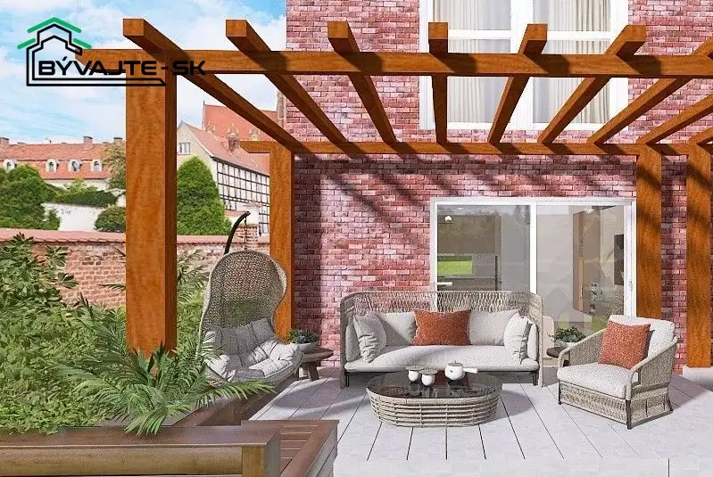
Dom10 284 000 €Novostavba dvojdomu – Prievidza, Kopanice Prievidza 114 m² RK BÝVAJTE -SKPredstavujeme Vám modernú 4 izbovú tehlovú novostavbu s dvoma bytovými jednotkami, nachádzajúcu sa v atraktívnej a pokojnej časti mesta…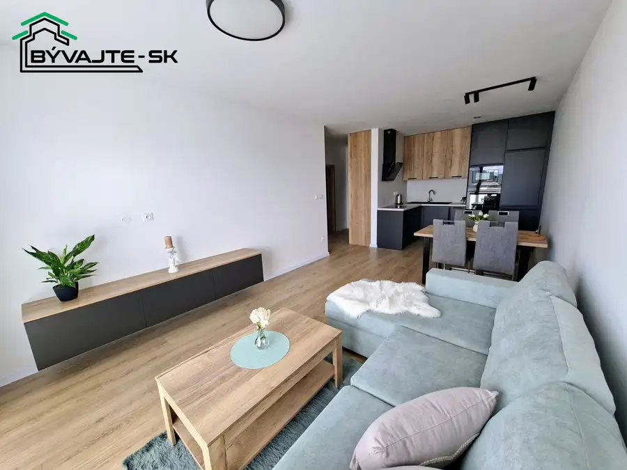
Byt10 Cena dohodouPrenájom luxusného dvojizbového apartmánu s garážou v novom projekte Pánsky Háj II v Kanianke. Kanianka 2-izbový49.71 m²2. podlažie NOVINKA RK BÝVAJTE - SK!Ponúkame Vám na prenájom luxusný 2 izbový byt v novostavbe bytového v obci Kanianka - Pánsky Háj II.Byt ktorý má všetko čo…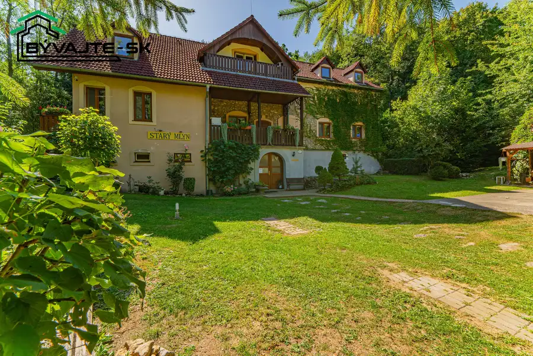
Komerčné priestory10 Cena dohodouAristokratický skvost s dušou: Na predaj Starý mlyn z 18. storočia v obci Tužina Tužina 400 m² Aristokratický skvost s dušou: Na predaj historický Starý mlyn v obci TužinaVstúpte do histórie a staňte sa majiteľom miesta, kde sa stretávala…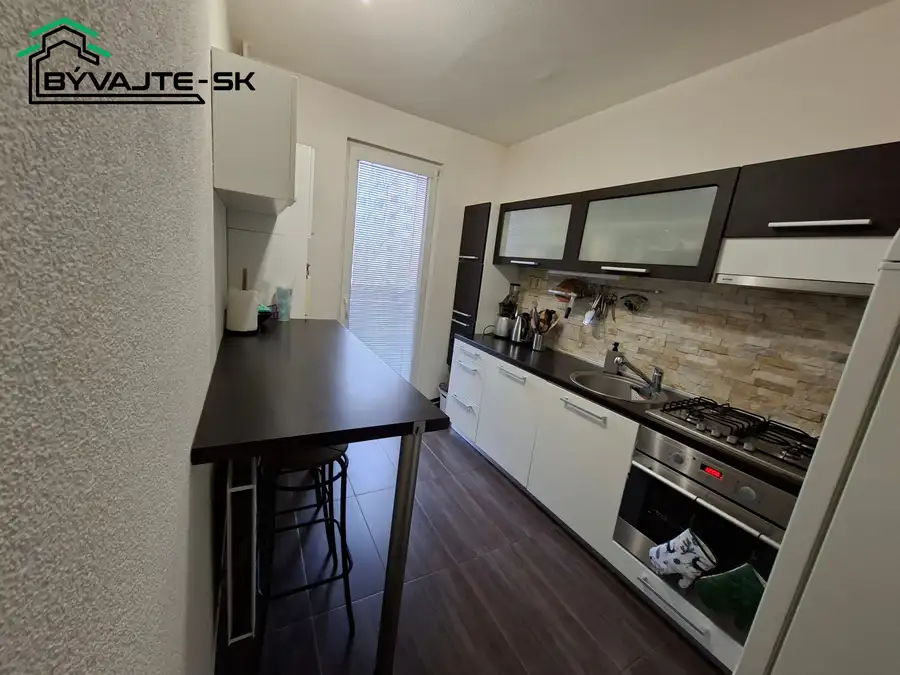
Byt10 Cena dohodouDvojizbový byt na prenájom v Prievidzi - sídlisko Necpaly. Prievidza 2-izbový50 m²2. podlažie NOVINKA!RK BÝVAJTE - SK Vám ponúka na prenájom slnečný 2 izbový byt v Prievidzi na sídlisku Necpaly na ul. Gazdovská. Byt o úžitkovej ploche 50m2 sa…Tomuto výberu zatiaľ nezodpovedá žiadna ponuka. Napíšte mi, čo hľadáte.
Volám sa Dana Kršková. Som realitná maklérka kancelárie BÝVAJTE - SK s.r.o. a pôsobím predovšetkým v lokalitách Prievidza, Tužina, Kanianka a Pravenec (Trenčiansky kraj).

16 nehnuteľností, predovšetkým byty, rodinné domy, pozemky. Každá má vlastnú stránku s fotkami, popisom a mapou.
Prezrieť ponuku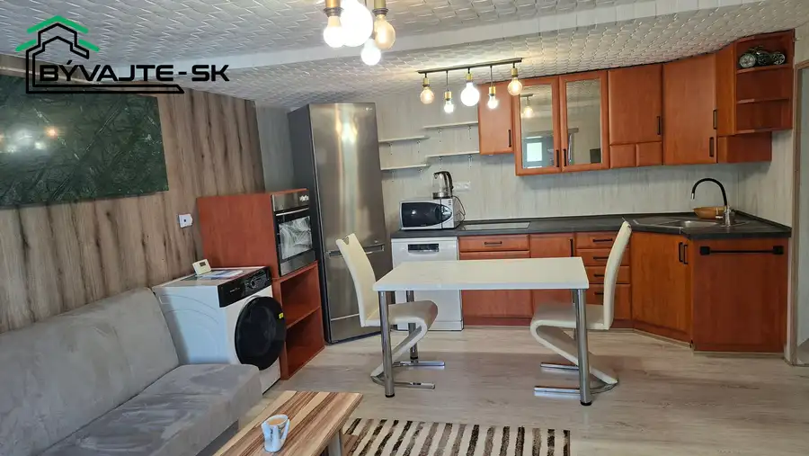
Prievidza, Tužina, Kanianka, Pravenec, Malinová a okolie. Ponuku si môžete prezrieť podľa lokality.
Nehnuteľnosti v lokalite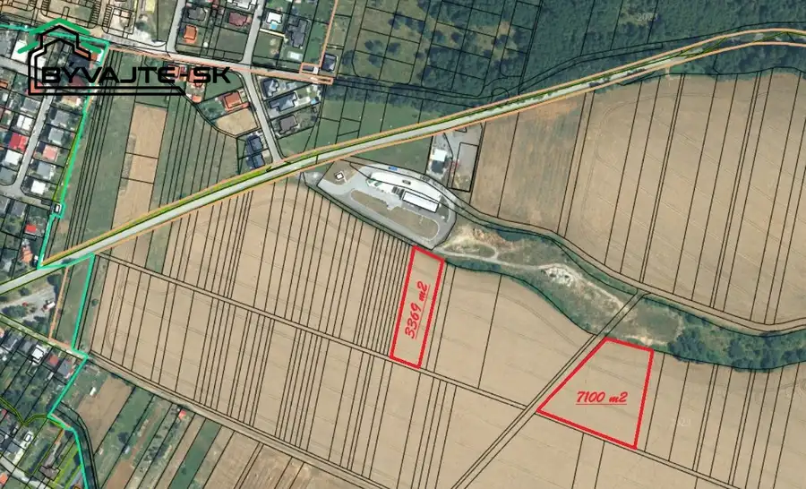
Odhad trhovej ceny, príprava prezentácie, obhliadky, zmluvy a odovzdanie nehnuteľnosti.
Dohodnúť stretnutieKaždý špendlík je jedna nehnuteľnosť z mojej ponuky. Kliknite a pozrite sa.
© prispievatelia OpenStreetMap
Na čo sa pýtate najčastejšie, skôr než sa stretneme.
Odhad trhovej ceny vychádza z aktuálnych ponúk a predajov v lokalite, nie z cenníkových tabuliek. Podmienky Vám poviem pri prvom telefonáte.
Najprv obhliadka a odhad ceny, potom príprava prezentácie (fotografie, popis, inzercia), obhliadky so záujemcami, rezervačná zmluva, kúpna zmluva, návrh na vklad do katastra a odovzdanie nehnuteľnosti. O každom kroku viete vopred.
Najrýchlejšie cez WhatsApp alebo telefón. Termín stretnutia alebo obhliadky dohodneme podľa Vás.